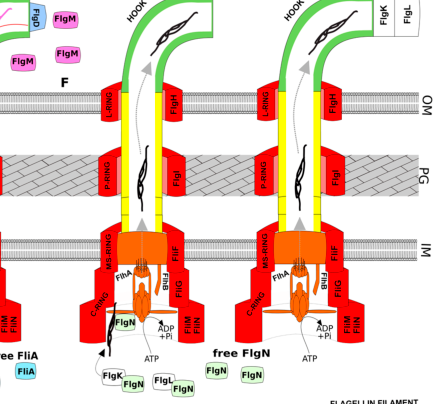

flgK encodes flagellar hook-associated protein 1, a structural component of the hook-filament junction in the P. putida KT2440 bacterial flagellum. Its core role is flagellar structure and assembly rather than enzymatic activity.
| GO Term | Evidence | Action | Reason |
|---|---|---|---|
|
GO:0005198
structural molecule activity
|
IEA
GO_REF:0000002 |
ACCEPT |
Summary: This is the appropriate molecular-function annotation for FlgK. FlgK is a flagellar hook-associated structural protein, not an enzyme.
Reason: Structural molecule activity is the best current MF term for this flagellar junction component.
Supporting Evidence:
file:PSEPK/flgK/flgK-uniprot.txt
RecName: Full=Flagellar hook-associated protein 1
file:PSEPK/flgK/flgK-goa.tsv
GO:0005198 structural molecule activity
file:PSEPK/flgK/flgK-deep-research-falcon.md
FlgK is a **structural adapter**, not an enzyme or transporter. Together with FlgL, it forms the **hook–filament junction** that connects the flexible hook to the filament
|
|
GO:0005576
extracellular region
|
IEA
GO_REF:0000044 |
KEEP AS NON CORE |
Summary: Extracellular region is directionally correct for an exported flagellar axial protein, but it is too broad compared with bacterial-type flagellum and hook annotations.
Reason: Keep as a broad location while treating the flagellar component terms as core.
Supporting Evidence:
file:PSEPK/flgK/flgK-uniprot.txt
SUBCELLULAR LOCATION: Bacterial flagellum
file:PSEPK/flgK/flgK-goa.tsv
GO:0005576 extracellular region
file:PSEPK/flgK/flgK-deep-research-falcon.md
FlgK functions in the **extracellular axial structure** at the interface between hook and filament, i.e., outside the cytoplasm in the assembled flagellum.
|
|
GO:0009288
bacterial-type flagellum
|
IEA
GO_REF:0000120 |
ACCEPT |
Summary: This cellular-component annotation is correct. FlgK is a component of the bacterial flagellum.
Reason: The broad flagellum term is appropriate and complements the more specific hook-associated annotation.
Supporting Evidence:
file:PSEPK/flgK/flgK-uniprot.txt
SUBCELLULAR LOCATION: Bacterial flagellum
file:PSEPK/flgK/flgK-goa.tsv
GO:0009288 bacterial-type flagellum
|
|
GO:0009424
bacterial-type flagellum hook
|
IEA
GO_REF:0000002 |
MODIFY |
Summary: This imported hook annotation is close but not the most precise term for flgK. Flagellar hook-associated protein 1 is a hook-associated protein at the hook-filament junction, and GO:0009422 bacterial-type flagellum hook-filament junction is the better cellular-component term.
Reason: Use GO:0009422 because it names the hook-filament junction, whereas GO:0009424 describes the hook proper.
Proposed replacements:
bacterial-type flagellum hook-filament junction
Supporting Evidence:
file:PSEPK/flgK/flgK-uniprot.txt
hook-associated protein
file:PSEPK/flgK/flgK-goa.tsv
GO:0009424 bacterial-type flagellum hook
file:PSEPK/flgK/flgK-deep-research-falcon.md
**FlgK is a structural adapter** at the **hook–filament junction**. In *Pseudomonas* gene-function mapping tables, **flgK** is explicitly annotated as “**hook/filament junction protein**”.
file:PSEPK/flgK/flgK-deep-research-falcon.md
it is composed of **11 FlgK subunits and 11 FlgL subunits** forming an adapter that **firmly connects** hook and filament
|
|
GO:0044780
bacterial-type flagellum assembly
|
IEA
GO_REF:0000120 |
ACCEPT |
Summary: This process annotation is appropriate. As a hook-associated structural protein, FlgK contributes directly to bacterial-type flagellum assembly.
Reason: Flagellar assembly is the direct biological process for this structural component.
Supporting Evidence:
file:PSEPK/flgK/flgK-uniprot.txt
RecName: Full=Flagellar hook-associated protein 1
file:PSEPK/flgK/flgK-goa.tsv
GO:0044780 bacterial-type flagellum assembly
file:PSEPK/flgK/flgK-deep-research-falcon.md
if FlgK, FlgL, or the filament cap FliD is missing, exported flagellin fails to polymerize into the filament and instead leaks into the medium
file:PSEPK/flgK/flgK-deep-research-falcon.md
**hook-associated proteins FlgK and FlgL are exported** “to ensure junction protein insertion,” and these proteins are **chaperoned by FlgN**
|
Q: Does KT2440 FlgK have a measurable role in hook-filament junction stability or filament capping beyond conserved FlgK structural function?
Experiment: Create an in-frame flgK deletion and complementation strain, then assess flagellar structure by electron microscopy and motility in swim plates.
Hypothesis: FlgK is required for proper hook-filament junction assembly and flagellar motility in KT2440.
Type: targeted mutant phenotype analysis
This report is retrieval-only and is generated directly from Asta results.
search_papers_by_relevance with snippet_search.The research report should be a detailed narrative explaining the function, biological processes, and localization of the gene product. Citations should be given for all claims.
You should prioritize authoritative reviews and primary scientific literature when conducting research. You can supplement
this with annotations you find in gene/protein databases, but these can be outdated or inaccurate.
We are specifically interested in the primary function of the gene - for enzymes, what reaction is catalyzed, and what is the substrate specificity? For transporters, what is the substrate? For structural proteins or adapters, what is the broader structural role? For signaling molecules, what is the role in the pathway.
We are interested in where in or outside the cell the gene product carries out its function.
We are also interested in the signaling or biochemical pathways in which the gene functions. We are less interested in broad pleiotropic effects, except where these elucidate the precise role.
Include evidence where possible. We are interested in both experimental evidence as well as inference from structure, evolution, or bioinformatic analysis. Precise studies should be prioritized over high-throughput, where available.
Target specified by user: UniProt Q88ES2, gene flgK, ordered locus PP_4381, organism Pseudomonas putida (strain KT2440). The retrieved literature supports that flgK in Gram-negative bacteria and in Pseudomonas refers to a hook–filament junction protein (also historically termed HAP1) that functions together with FlgL to connect the hook to the filament. This matches the UniProt-provided description (“flagellar hook-associated protein 1”) and the functional assignment of flgK in a Pseudomonas flagella review. (bouteiller2021pseudomonasflagellageneralities pages 2-4)
Important limitation: within the documents retrieved in this run, I did not find a primary paper explicitly mapping locus tag PP_4381 to flgK by sequence, genetics, or direct annotation transfer. Therefore, the PP_4381↔flgK mapping is treated here as coming from the user-provided UniProt record, while the function is supported by conserved flagellar biology and authoritative reviews. (bouteiller2021pseudomonasflagellageneralities pages 2-4)
The bacterial flagellum is a large macromolecular machine consisting of (i) a basal body/motor embedded in the cell envelope, (ii) a hook that acts as a universal joint, and (iii) a filament that serves as the helical propeller. Assembly is sequential and requires exporting subunits through the flagellar type III secretion system (fT3SS) to the distal end, where polymerization occurs. (minamino2023structureassemblyand pages 1-3)
Because the hook and filament differ in structural properties, flagellin cannot assemble directly onto the hook tip. A dedicated hook–filament junction is formed to bridge this interface. (nakamura2024structureanddynamics pages 6-8)
FlgK is a structural adapter at the hook–filament junction. In Pseudomonas gene-function mapping tables, flgK is explicitly annotated as “hook/filament junction protein”. (bouteiller2021pseudomonasflagellageneralities pages 2-4)
In Pseudomonas (polar flagellates), after hook completion and regulatory transitions, hook-associated proteins FlgK and FlgL are exported “to ensure junction protein insertion,” and these proteins are chaperoned by FlgN (FlgN is described as not essential for FlgK/L secretion). (bouteiller2021pseudomonasflagellageneralities pages 9-11)
In the canonical assembly logic summarized in recent reviews, the fT3SS exports substrates in an ordered fashion as the axial structure grows. In the Pseudomonas flagellar assembly model, FlgK/FlgL export occurs after FlgM release (i.e., after the checkpoint associated with hook completion that frees the alternative sigma factor FliA to activate late genes). (bouteiller2021pseudomonasflagellageneralities pages 9-11, bouteiller2021pseudomonasflagellageneralities pages 11-12)
The broader flagellar assembly review framework emphasizes that subunits are transported to the distal tip through the fT3SS, and that the hook-to-filament transition is a key stage in which specialized components (junction proteins and cap proteins) enable productive filament growth. (minamino2023structureassemblyand pages 1-3)
A 2024 review synthesizing high-resolution structural and mechanistic work states that the junction is required because of the hook/filament mismatch; it also reports that if FlgK, FlgL, or the filament cap FliD is missing, exported flagellin fails to polymerize into the filament and instead leaks into the medium. (nakamura2024structureanddynamics pages 6-8)
FlgK functions in the extracellular axial structure at the interface between hook and filament, i.e., outside the cytoplasm in the assembled flagellum. Its subunits are exported through the fT3SS and incorporated at the growing distal end during the hook-to-filament transition. (minamino2023structureassemblyand pages 1-3, bouteiller2021pseudomonasflagellageneralities pages 9-11)
A 2024 review reports a quantitative stoichiometry for the junction: it is composed of 11 FlgK subunits and 11 FlgL subunits forming an adapter that firmly connects hook and filament. (nakamura2024structureanddynamics pages 6-8)
That same review provides key quantitative context for the filament: the filament is assembled from ~30,000 flagellin subunits and uses a pentameric filament cap (FliD) to facilitate growth, underscoring the scale of the structure that the FlgK/FlgL junction must mechanically support. (nakamura2024structureanddynamics pages 6-8)
The Pseudomonas flagella review provides a schematic in which FlgK and FlgL are shown being inserted at the junction after regulatory transitions, supporting the stepwise export-and-assembly model. (bouteiller2021pseudomonasflagellageneralities media bfdc64bd)
It also provides a schematic of the Pseudomonas four-tier transcriptional/assembly hierarchy, contextualizing when junction proteins appear relative to earlier basal-body/hook steps and later filament steps. (bouteiller2021pseudomonasflagellageneralities media 24df018c)
A comprehensive Pseudomonas flagella review describes that, unlike enteric bacteria, Pseudomonas uses a four-tier hierarchical transcriptional cascade (classes I–IV), with FleQ as a master regulator and FliA controlling late genes. (bouteiller2021pseudomonasflagellageneralities pages 11-12)
In this framework, the release of FlgM inhibition and subsequent export of hook-associated proteins including FlgK/FlgL is part of the coordinated progression from hook completion to filament assembly. (bouteiller2021pseudomonasflagellageneralities pages 9-11, bouteiller2021pseudomonasflagellageneralities pages 11-12)
Two recent authoritative sources illustrate the current state of the field:
Minamino & Kinoshita (EcoSal Plus, 2023-12; https://doi.org/10.1128/ecosalplus.esp-0011-2023) summarizes how ordered export, assembly checkpoints, and distal-tip polymerization generate a mature flagellum, placing the hook–filament junction in the broader assembly logic. (minamino2023structureassemblyand pages 1-3)
Nakamura & Minamino (Biomolecules, 2024-11; https://doi.org/10.3390/biom14121488) provides an updated structural/mechanistic synthesis and explicitly reports junction stoichiometry (11 FlgK + 11 FlgL) and the experimentally inferred phenotype that loss of junction/cap components causes flagellin leakage due to failed polymerization. (nakamura2024structureanddynamics pages 6-8)
Together, these reflect a 2023–2024 trend: increasingly high-resolution structural knowledge is being integrated with genetics/biophysics to explain not just “what proteins exist” but why particular adapters like FlgK are required at specific assembly transitions. (minamino2023structureassemblyand pages 1-3, nakamura2024structureanddynamics pages 6-8)
Flagella-driven motility is repeatedly framed in authoritative sources as enabling adhesion, colonization, and competitiveness in diverse contexts; in Pseudomonas, this is intertwined with regulatory switches that coordinate motility versus sessility/biofilm states. (minamino2023structureassemblyand pages 1-3, bouteiller2021pseudomonasflagellageneralities pages 11-12)
Because FlgK is essential for assembling a functional filament (and thus a functional propeller), any applied setting that depends on motility—e.g., dispersal toward nutrients, surface colonization dynamics, or transitioning between planktonic and surface-associated states—implicitly depends on intact flgK function. This application linkage is therefore strong at the level of flagellar biology, but KT2440 flgK-specific applied studies were not retrieved in this run. (bouteiller2021pseudomonasflagellageneralities pages 2-4, nakamura2024structureanddynamics pages 6-8)
| Annotation aspect | Summary for FlgK (Q88ES2 / PP_4381) | Evidence type | Citations |
|---|---|---|---|
| Verified identity | Target protein is FlgK, flagellar hook-associated protein 1 from Pseudomonas putida KT2440; the requested annotation (UniProt Q88ES2; ordered locus PP_4381) is consistent with the conserved hook/filament junction protein role assigned to flgK in Pseudomonas flagellar systems. Direct locus-to-function confirmation for PP_4381 was not found in the retrieved literature, so the PP_4381 mapping here relies on the user-provided UniProt identifier plus Pseudomonas flgK functional annotation from reviews. | Database-linked identity check + review-based functional concordance | (bouteiller2021pseudomonasflagellageneralities pages 2-4, bouteiller2021pseudomonasflagellageneralities pages 11-12) |
| Cellular localization | FlgK acts in the cell envelope/extracellular axial structure at the distal end of the hook, where it is exported by the flagellar type III secretion system (fT3SS) and inserted as part of the hook–filament junction before filament growth. | Review | (minamino2023structureassemblyand pages 1-3, bouteiller2021pseudomonasflagellageneralities pages 9-11) |
| Primary function in flagellar assembly | FlgK is a structural adapter, not an enzyme or transporter. Together with FlgL, it forms the hook–filament junction that connects the flexible hook to the filament, enabling mechanical continuity and the transition from hook completion to filament assembly. Loss of junction components prevents proper filament polymerization. | Review + structural synthesis | (minamino2023structureassemblyand pages 1-3, bouteiller2021pseudomonasflagellageneralities pages 9-11, nakamura2024structureanddynamics pages 6-8) |
| Key structural / stoichiometry details | Recent structural synthesis reports the hook–filament junction as 11 FlgK subunits + 11 FlgL subunits, forming a ring-like adapter between hook and filament. This junction buffers the structural mismatch between hook and filament and is essential for productive filament growth. | Cryo-EM-informed review / structural analysis | (nakamura2024structureanddynamics pages 6-8, nakamura2024structureanddynamics pages 8-9, bouteiller2021pseudomonasflagellageneralities media bfdc64bd) |
| Regulation / expression class in Pseudomonas | In Pseudomonas, flagellar genes are controlled by a four-tier transcriptional cascade. flgK is assigned in review literature to the late FliA-dependent program (Class III in the review’s Salmonella/Pseudomonas mapping table; functionally late-stage junction assembly before/with filament assembly), and junction proteins are exported after hook completion and FlgM release. | Review / regulatory model | (bouteiller2021pseudomonasflagellageneralities pages 2-4, bouteiller2021pseudomonasflagellageneralities pages 9-11, bouteiller2021pseudomonasflagellageneralities pages 11-12) |
| Related pathway context | FlgK functions within the flagellar biogenesis pathway, downstream of hook completion and upstream of bulk flagellin polymerization. Its export order is coordinated with chaperones such as FlgN, and correct timing is linked to the secretion specificity switch that follows hook completion. | Review | (minamino2023structureassemblyand pages 1-3, bouteiller2021pseudomonasflagellageneralities pages 9-11) |
| Genetics / phenotype relevance | Although no KT2440-specific flgK mutant paper was retrieved, broader flagellar genetics in Pseudomonas and enteric models indicate that disruption of FlgK/FlgL abolishes normal filament assembly and motility because exported flagellin cannot polymerize efficiently without the junction. | Genetics + comparative inference | (nakamura2024structureanddynamics pages 6-8, bouteiller2021pseudomonasflagellageneralities pages 2-4) |
| Limitations / KT2440-specific evidence gaps | KT2440-specific primary studies directly testing PP_4381/flgK were not retrieved. Therefore, the annotation is strong for conserved molecular function but weaker for strain-specific phenotypes, operon mapping, and direct experimental localization in KT2440. The most reliable claims come from conserved flagellar biology, Pseudomonas reviews, and recent structural work rather than direct PP_4381 experiments. | Evidence-gap assessment | (minamino2023structureassemblyand pages 1-3, bouteiller2021pseudomonasflagellageneralities pages 2-4, nakamura2024structureanddynamics pages 6-8) |
Table: This table summarizes the best-supported functional annotation for FlgK (UniProt Q88ES2) in Pseudomonas putida KT2440, integrating conserved flagellar biology, Pseudomonas-specific regulatory reviews, and recent structural evidence. It also makes explicit where KT2440-specific evidence for PP_4381 remains limited.
References
(bouteiller2021pseudomonasflagellageneralities pages 2-4): Mathilde Bouteiller, Charly Dupont, Yvann Bourigault, Xavier Latour, Corinne Barbey, Yoan Konto-Ghiorghi, and Annabelle Merieau. Pseudomonas flagella: generalities and specificities. International Journal of Molecular Sciences, 22:3337, Mar 2021. URL: https://doi.org/10.3390/ijms22073337, doi:10.3390/ijms22073337. This article has 147 citations.
(minamino2023structureassemblyand pages 1-3): Tohru Minamino and Miki Kinoshita. Structure, assembly, and function of flagella responsible for bacterial locomotion. EcoSal Plus, Dec 2023. URL: https://doi.org/10.1128/ecosalplus.esp-0011-2023, doi:10.1128/ecosalplus.esp-0011-2023. This article has 56 citations.
(nakamura2024structureanddynamics pages 6-8): Shuichi Nakamura and Tohru Minamino. Structure and dynamics of the bacterial flagellar motor complex. Biomolecules, 14:1488, Nov 2024. URL: https://doi.org/10.3390/biom14121488, doi:10.3390/biom14121488. This article has 25 citations.
(bouteiller2021pseudomonasflagellageneralities pages 9-11): Mathilde Bouteiller, Charly Dupont, Yvann Bourigault, Xavier Latour, Corinne Barbey, Yoan Konto-Ghiorghi, and Annabelle Merieau. Pseudomonas flagella: generalities and specificities. International Journal of Molecular Sciences, 22:3337, Mar 2021. URL: https://doi.org/10.3390/ijms22073337, doi:10.3390/ijms22073337. This article has 147 citations.
(bouteiller2021pseudomonasflagellageneralities pages 11-12): Mathilde Bouteiller, Charly Dupont, Yvann Bourigault, Xavier Latour, Corinne Barbey, Yoan Konto-Ghiorghi, and Annabelle Merieau. Pseudomonas flagella: generalities and specificities. International Journal of Molecular Sciences, 22:3337, Mar 2021. URL: https://doi.org/10.3390/ijms22073337, doi:10.3390/ijms22073337. This article has 147 citations.
(bouteiller2021pseudomonasflagellageneralities media bfdc64bd): Mathilde Bouteiller, Charly Dupont, Yvann Bourigault, Xavier Latour, Corinne Barbey, Yoan Konto-Ghiorghi, and Annabelle Merieau. Pseudomonas flagella: generalities and specificities. International Journal of Molecular Sciences, 22:3337, Mar 2021. URL: https://doi.org/10.3390/ijms22073337, doi:10.3390/ijms22073337. This article has 147 citations.
(bouteiller2021pseudomonasflagellageneralities media 24df018c): Mathilde Bouteiller, Charly Dupont, Yvann Bourigault, Xavier Latour, Corinne Barbey, Yoan Konto-Ghiorghi, and Annabelle Merieau. Pseudomonas flagella: generalities and specificities. International Journal of Molecular Sciences, 22:3337, Mar 2021. URL: https://doi.org/10.3390/ijms22073337, doi:10.3390/ijms22073337. This article has 147 citations.
(nakamura2024structureanddynamics pages 8-9): Shuichi Nakamura and Tohru Minamino. Structure and dynamics of the bacterial flagellar motor complex. Biomolecules, 14:1488, Nov 2024. URL: https://doi.org/10.3390/biom14121488, doi:10.3390/biom14121488. This article has 25 citations.

id: Q88ES2
gene_symbol: flgK
product_type: PROTEIN
status: DRAFT
taxon:
id: NCBITaxon:160488
label: Pseudomonas putida (strain ATCC 47054 / DSM 6125 / CFBP 8728 / NCIMB 11950 / KT2440)
description: flgK encodes flagellar hook-associated protein 1, a structural component of the hook-filament junction in the P. putida KT2440 bacterial flagellum. Its core role is flagellar structure and assembly rather than enzymatic activity.
existing_annotations:
- term:
id: GO:0005198
label: structural molecule activity
evidence_type: IEA
original_reference_id: GO_REF:0000002
review:
summary: This is the appropriate molecular-function annotation for FlgK. FlgK is a flagellar hook-associated structural protein, not an enzyme.
action: ACCEPT
reason: Structural molecule activity is the best current MF term for this flagellar junction component.
supported_by:
- reference_id: file:PSEPK/flgK/flgK-uniprot.txt
supporting_text: 'RecName: Full=Flagellar hook-associated protein 1'
- reference_id: file:PSEPK/flgK/flgK-goa.tsv
supporting_text: "GO:0005198\tstructural molecule activity"
- reference_id: file:PSEPK/flgK/flgK-deep-research-falcon.md
supporting_text: |-
FlgK is a **structural adapter**, not an enzyme or transporter. Together with FlgL, it forms the **hook–filament junction** that connects the flexible hook to the filament
- term:
id: GO:0005576
label: extracellular region
evidence_type: IEA
original_reference_id: GO_REF:0000044
review:
summary: Extracellular region is directionally correct for an exported flagellar axial protein, but it is too broad compared with bacterial-type flagellum and hook annotations.
action: KEEP_AS_NON_CORE
reason: Keep as a broad location while treating the flagellar component terms as core.
supported_by:
- reference_id: file:PSEPK/flgK/flgK-uniprot.txt
supporting_text: 'SUBCELLULAR LOCATION: Bacterial flagellum'
- reference_id: file:PSEPK/flgK/flgK-goa.tsv
supporting_text: "GO:0005576\textracellular region"
- reference_id: file:PSEPK/flgK/flgK-deep-research-falcon.md
supporting_text: |-
FlgK functions in the **extracellular axial structure** at the interface between hook and filament, i.e., outside the cytoplasm in the assembled flagellum.
- term:
id: GO:0009288
label: bacterial-type flagellum
evidence_type: IEA
original_reference_id: GO_REF:0000120
review:
summary: This cellular-component annotation is correct. FlgK is a component of the bacterial flagellum.
action: ACCEPT
reason: The broad flagellum term is appropriate and complements the more specific hook-associated annotation.
supported_by:
- reference_id: file:PSEPK/flgK/flgK-uniprot.txt
supporting_text: 'SUBCELLULAR LOCATION: Bacterial flagellum'
- reference_id: file:PSEPK/flgK/flgK-goa.tsv
supporting_text: "GO:0009288\tbacterial-type flagellum"
- term:
id: GO:0009424
label: bacterial-type flagellum hook
evidence_type: IEA
original_reference_id: GO_REF:0000002
review:
summary: This imported hook annotation is close but not the most precise term for flgK. Flagellar hook-associated protein 1 is a hook-associated protein at the hook-filament junction, and GO:0009422 bacterial-type flagellum hook-filament junction is the better cellular-component term.
action: MODIFY
reason: Use GO:0009422 because it names the hook-filament junction, whereas GO:0009424 describes the hook proper.
proposed_replacement_terms:
- id: GO:0009422
label: bacterial-type flagellum hook-filament junction
supported_by:
- reference_id: file:PSEPK/flgK/flgK-uniprot.txt
supporting_text: hook-associated protein
- reference_id: file:PSEPK/flgK/flgK-goa.tsv
supporting_text: "GO:0009424\tbacterial-type flagellum hook"
- reference_id: file:PSEPK/flgK/flgK-deep-research-falcon.md
supporting_text: |-
**FlgK is a structural adapter** at the **hook–filament junction**. In *Pseudomonas* gene-function mapping tables, **flgK** is explicitly annotated as “**hook/filament junction protein**”.
- reference_id: file:PSEPK/flgK/flgK-deep-research-falcon.md
supporting_text: |-
it is composed of **11 FlgK subunits and 11 FlgL subunits** forming an adapter that **firmly connects** hook and filament
- term:
id: GO:0044780
label: bacterial-type flagellum assembly
evidence_type: IEA
original_reference_id: GO_REF:0000120
review:
summary: This process annotation is appropriate. As a hook-associated structural protein, FlgK contributes directly to bacterial-type flagellum assembly.
action: ACCEPT
reason: Flagellar assembly is the direct biological process for this structural component.
supported_by:
- reference_id: file:PSEPK/flgK/flgK-uniprot.txt
supporting_text: 'RecName: Full=Flagellar hook-associated protein 1'
- reference_id: file:PSEPK/flgK/flgK-goa.tsv
supporting_text: "GO:0044780\tbacterial-type flagellum assembly"
- reference_id: file:PSEPK/flgK/flgK-deep-research-falcon.md
supporting_text: |-
if FlgK, FlgL, or the filament cap FliD is missing, exported flagellin fails to polymerize into the filament and instead leaks into the medium
- reference_id: file:PSEPK/flgK/flgK-deep-research-falcon.md
supporting_text: |-
**hook-associated proteins FlgK and FlgL are exported** “to ensure junction protein insertion,” and these proteins are **chaperoned by FlgN**
references:
- id: GO_REF:0000002
title: Gene Ontology annotation through association of InterPro records with GO terms
findings: []
- id: GO_REF:0000044
title: Gene Ontology annotation based on UniProtKB/Swiss-Prot Subcellular Location vocabulary mapping, accompanied by conservative changes to GO terms applied by UniProt
findings: []
- id: GO_REF:0000120
title: Combined Automated Annotation using Multiple IEA Methods
findings: []
- id: file:PSEPK/flgK/flgK-uniprot.txt
title: UniProtKB entry for flgK (Flagellar hook-associated protein 1)
findings:
- statement: UniProt identifies flgK as Flagellar hook-associated protein 1 and supplies function, pathway, family, location, or GO cross-reference evidence used in this review.
- id: file:PSEPK/flgK/flgK-goa.tsv
title: QuickGO GOA annotations for flgK
findings:
- statement: The fetched GOA table contains the automated annotations reviewed for flgK.
- id: file:PSEPK/flgK/flgK-deep-research-falcon.md
title: Falcon (Edison Scientific) deep research report for flgK (Q88ES2), P. putida KT2440
findings:
- statement: |-
**FlgK is a structural adapter** at the **hook–filament junction**. In *Pseudomonas* gene-function mapping tables, **flgK** is explicitly annotated as “**hook/filament junction protein**”.
- statement: |-
FlgK is a **structural adapter**, not an enzyme or transporter. Together with FlgL, it forms the **hook–filament junction** that connects the flexible hook to the filament
- statement: |-
FlgK functions in the **extracellular axial structure** at the interface between hook and filament, i.e., outside the cytoplasm in the assembled flagellum.
- statement: |-
it is composed of **11 FlgK subunits and 11 FlgL subunits** forming an adapter that **firmly connects** hook and filament
- statement: |-
if FlgK, FlgL, or the filament cap FliD is missing, exported flagellin fails to polymerize into the filament and instead leaks into the medium
- statement: |-
**hook-associated proteins FlgK and FlgL are exported** “to ensure junction protein insertion,” and these proteins are **chaperoned by FlgN**
core_functions:
- description: FlgK is a structural hook-associated protein at the bacterial-type flagellum hook-filament junction that contributes to assembly of the hook-filament junction.
molecular_function:
id: GO:0005198
label: structural molecule activity
directly_involved_in:
- id: GO:0044780
label: bacterial-type flagellum assembly
locations:
- id: GO:0009422
label: bacterial-type flagellum hook-filament junction
- id: GO:0009288
label: bacterial-type flagellum
supported_by:
- reference_id: file:PSEPK/flgK/flgK-uniprot.txt
supporting_text: 'RecName: Full=Flagellar hook-associated protein 1'
- reference_id: file:PSEPK/flgK/flgK-uniprot.txt
supporting_text: 'SUBCELLULAR LOCATION: Bacterial flagellum'
- reference_id: file:PSEPK/flgK/flgK-deep-research-falcon.md
supporting_text: |-
**FlgK is a structural adapter** at the **hook–filament junction**. In *Pseudomonas* gene-function mapping tables, **flgK** is explicitly annotated as “**hook/filament junction protein**”.
- reference_id: file:PSEPK/flgK/flgK-deep-research-falcon.md
supporting_text: |-
FlgK is a **structural adapter**, not an enzyme or transporter. Together with FlgL, it forms the **hook–filament junction** that connects the flexible hook to the filament
proposed_new_terms: []
suggested_questions:
- question: Does KT2440 FlgK have a measurable role in hook-filament junction stability or filament capping beyond conserved FlgK structural function?
suggested_experiments:
- hypothesis: FlgK is required for proper hook-filament junction assembly and flagellar motility in KT2440.
description: Create an in-frame flgK deletion and complementation strain, then assess flagellar structure by electron microscopy and motility in swim plates.
experiment_type: targeted mutant phenotype analysis
{kind=link}